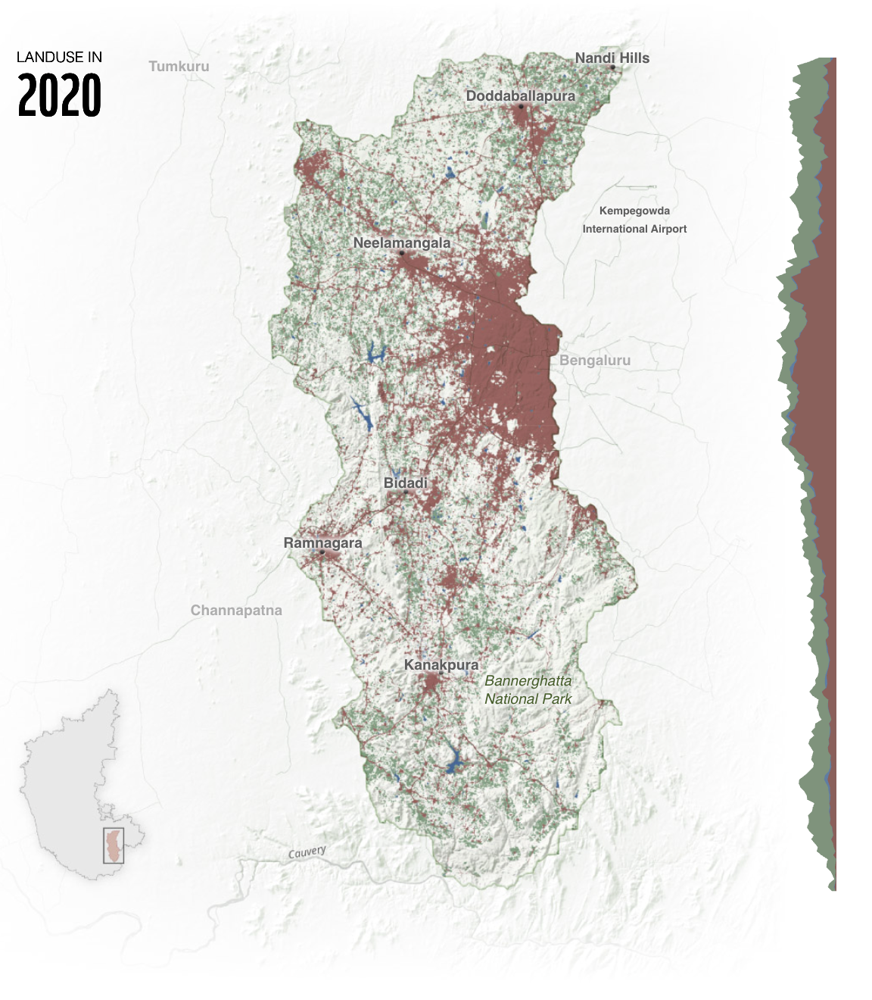
Source: Reviving Arkavathi, WWF-India
Tool: QGIS, Svelte, Adobe Illustrator, Figma
Dataset: Global Land Cover and Land Use Change, 2000-2020 (GLAD), OpenStreetMaps
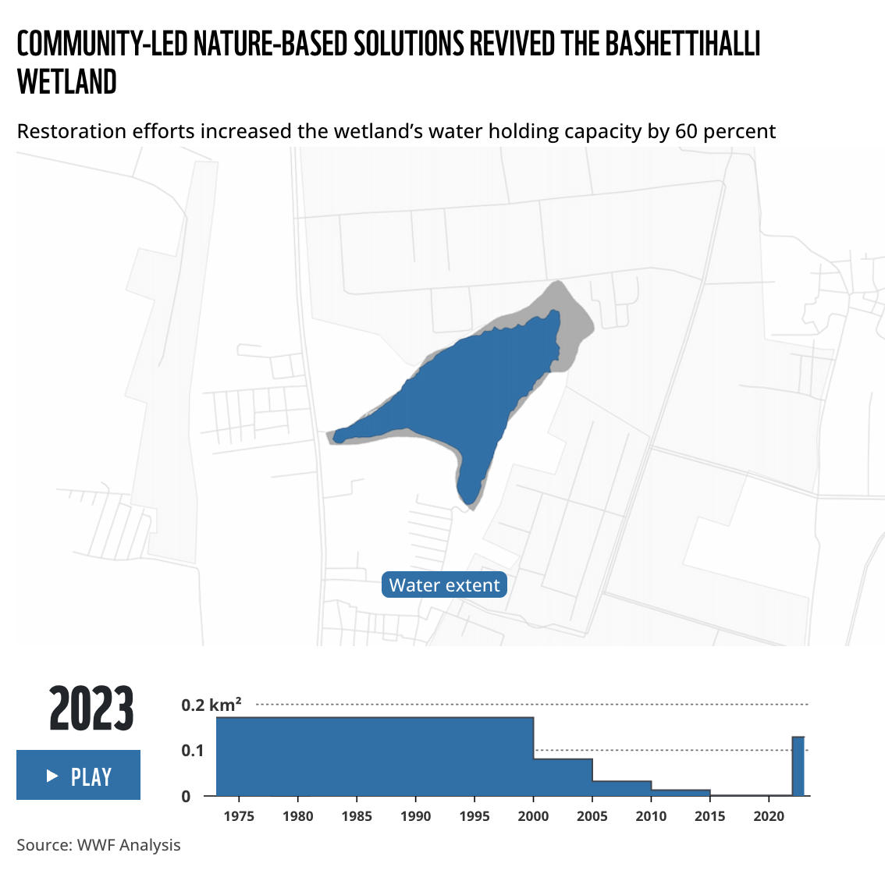
Source: Reviving Arkavathi, WWF-India
Tool: QGIS, Svelte, Figma
Dataset: WWF research, OpenStreetMaps
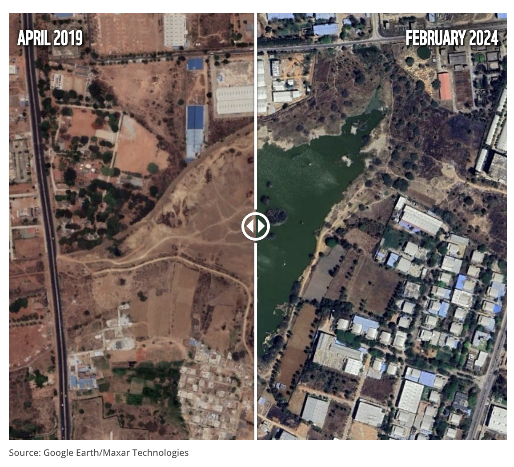
Source: Reviving Arkavathi, WWF-India
Tool: QGIS, Svelte, Figma
Dataset: Google Earth/Maxar Technologies
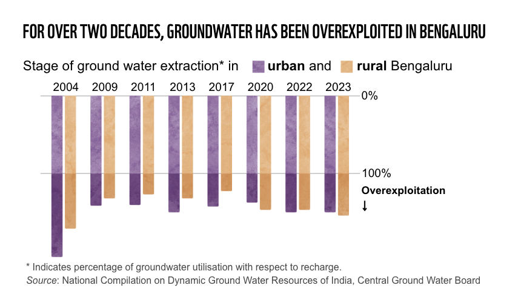
Source: Reviving Arkavathi, WWF-India
Tool: Adobe Illustrator
Dataset: Central Ground Water Board
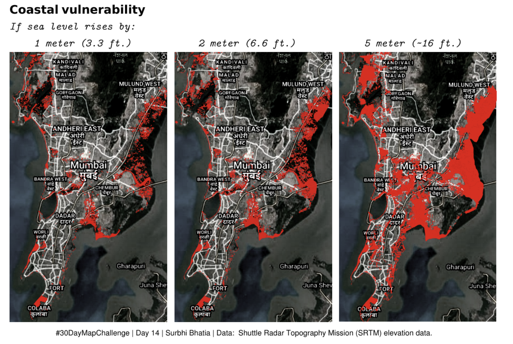
Source: #30DayMapChallenge
Tool: QGIS
Dataset: Shuttle Radar Topography Mission (SRTM)
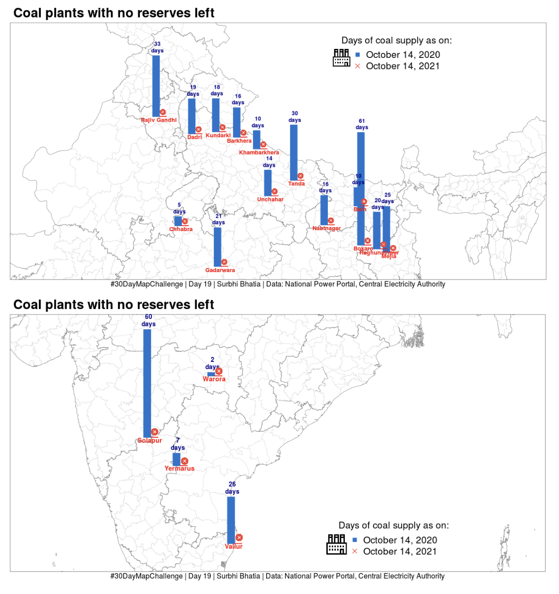
Source: #30DayMapChallenge
Tool: R
Dataset: National Power Portal, Central Electricity Authority
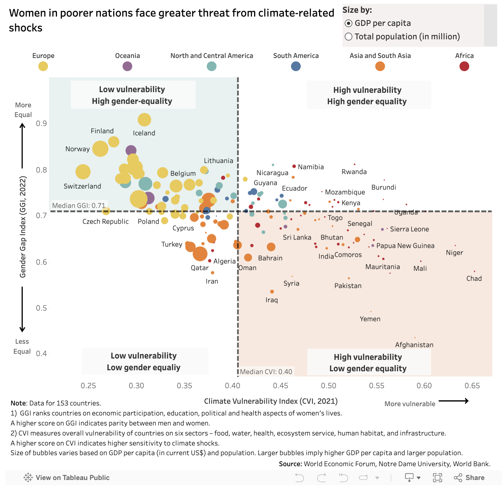
Source: Climate action needs more women on board, Festival De Datos
Tool: Tableau, R Markdown
Dataset: World Economic Forum, Notre Dame University
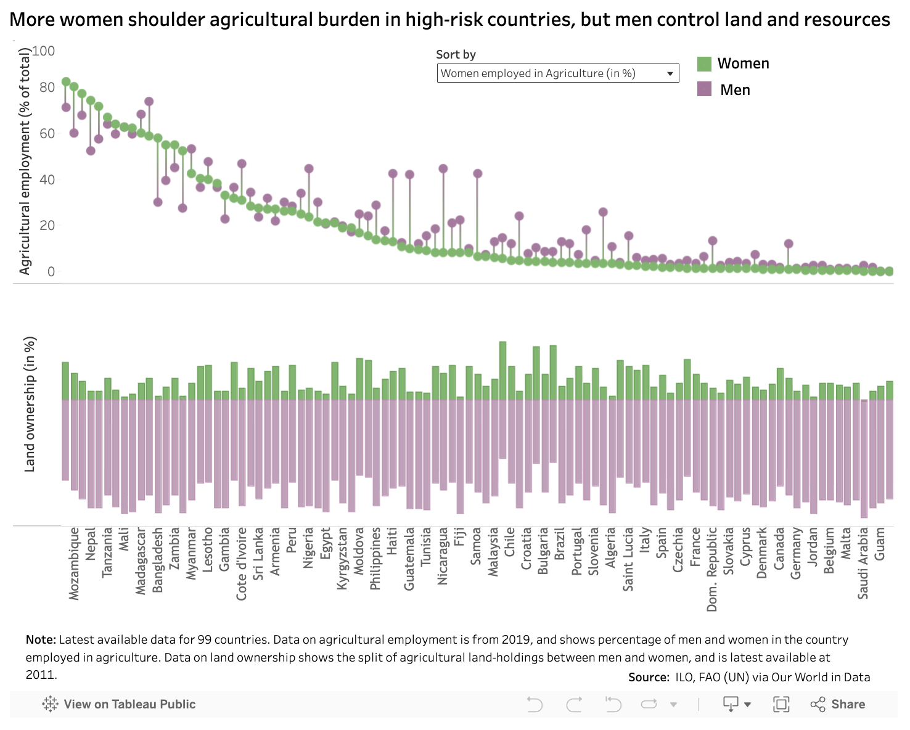
Source: Climate action needs more women on board, Festival De Datos
Tool: Tableau, R Markdown
Dataset: ILO, FAO (accessed via Our World in Data)
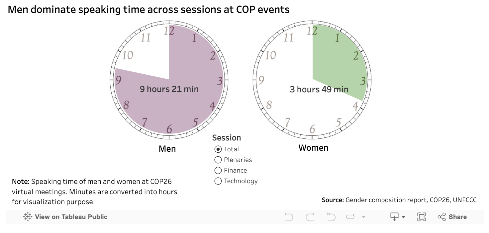
Source: Climate action needs more women on board, Festival De Datos
Tool: Tableau, R Markdown
Dataset: UNFCCC
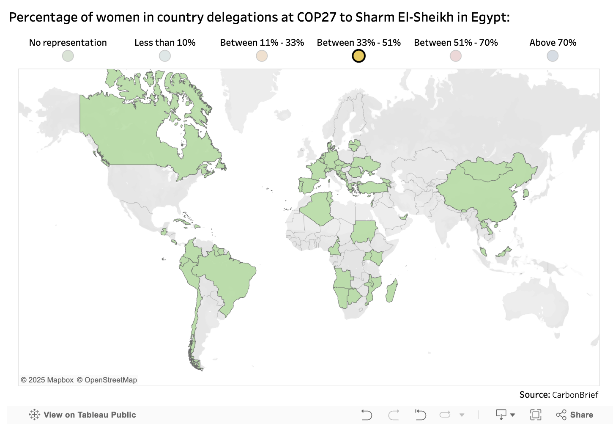
Source: Climate action needs more women on board, Festival De Datos
Tool: Tableau, R Markdown
Dataset: CarbonBrief
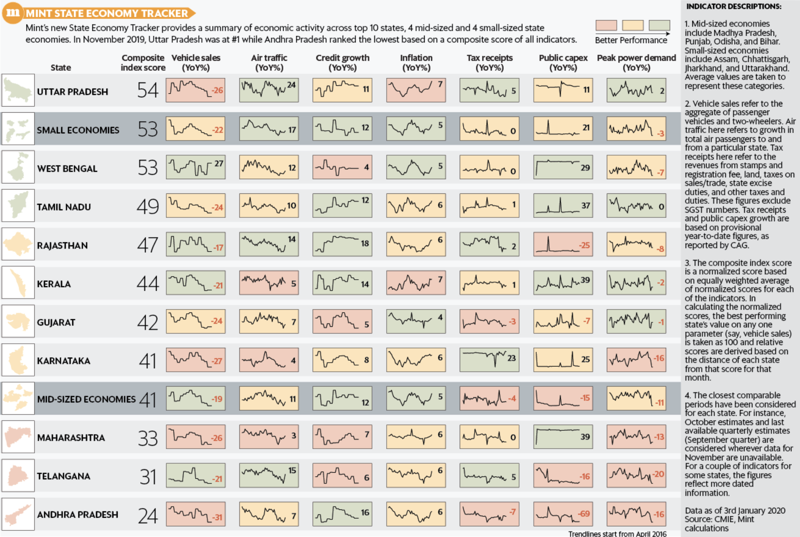
Source: State Economy Tracker (Mint)
Tool: R
Dataset: Centre for Monitoring Indian Economy (CMIE)
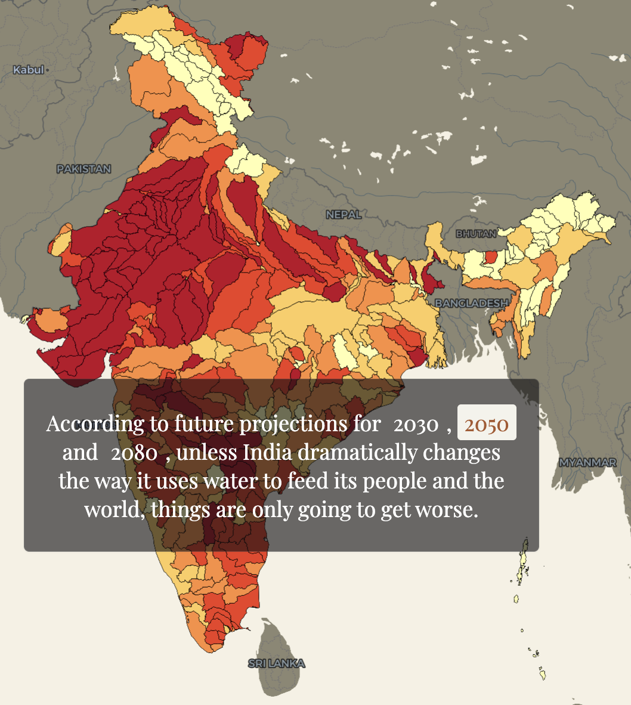
Source: Deeper and Deeper: India's Water Race to the Bottom
Tool: Maplibre
Dataset: Aqueduct Water Risk Atlas
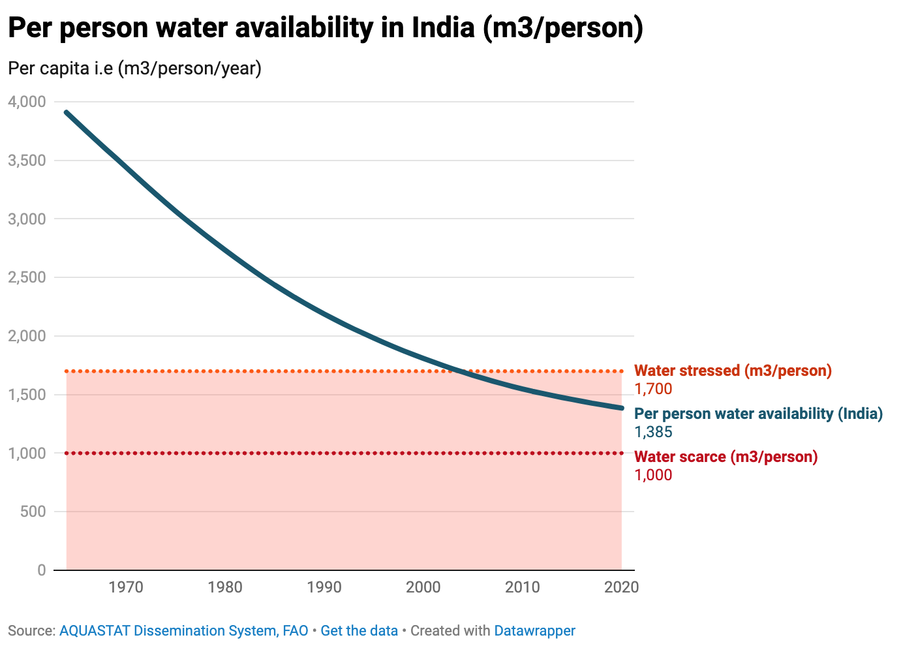
Source: Thibi and Earth Journalism Network, Environmental Data Journalism Academy
Tool: Datawrapper
Dataset: AQUASTAT Dissemination System, FAO
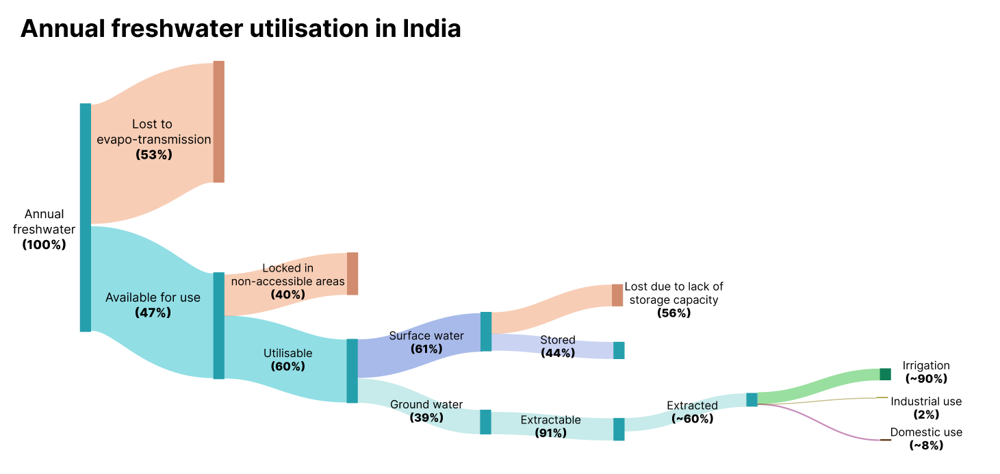
Source: Thibi and Earth Journalism Network, Environmental Data Journalism Academy
Tool: Sankeymatic
Dataset: Niti Aayog